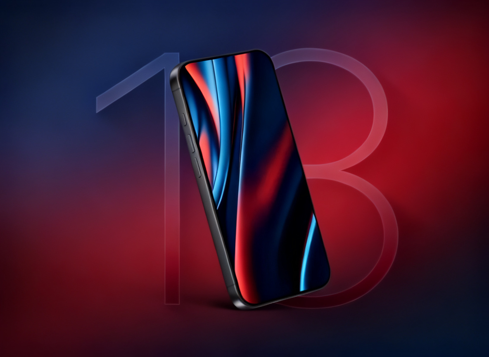

iPhone 18 Pro Colors Leak: Silver, Light Blue, Dark Cherry & Dark Gray Revealed via Camera Components


The first iPhone 18 Pro color leak of 2026 has surfaced, and it points to a noticeably bolder palette than the titanium-dominated tones Apple has used for the last two Pro cycles. According to a Macworld supply chain source, the iPhone 18 Pro will launch in Silver, Light Blue, Dark Cherry, and Dark Gray. Camera component images matching those color descriptions were subsequently posted on social media on May 22, 2026, providing a physical corroboration of the written report.
The headline color is Dark Cherry — a deep wine red that has no equivalent in recent iPhone Pro history. If accurate, it would be the richest color Apple has offered on a Pro model since the Deep Purple of the iPhone 14 Pro, and considerably more saturated than anything in the iPhone 16 or 17 Pro lineups. Light Blue is the second attention-grabbing entry: a more vivid blue than the Sky Blue that appeared on the iPhone 16, positioned closer to a proper sky or periwinkle tone than a muted slate.
Table of Contents
- The Four iPhone 18 Pro Colors Explained
- Where the Leak Came From — Camera Components on Social Media
- How Credible Is This Leak? Source Analysis
- iPhone 18 Pro vs iPhone 17 Pro Colors Compared
- What Camera Component Leaks Tell Us About Apple's Production Timeline
- iPhone 18 Pro Launch Timeline
- Frequently Asked Questions
The Four iPhone 18 Pro Colors Explained
Silver — A returning classic. Silver has been part of the iPhone lineup almost since the beginning and consistently ranks among the best-selling finishes. Its inclusion is expected and safe. In the context of a titanium-frame design, Silver reads as a lighter, more reflective tone than Natural Titanium while maintaining the professional aesthetic that Pro buyers tend to prefer.
Light Blue — The most versatile new color in the lineup. A lighter, more saturated blue than the Blue Titanium from the iPhone 15 Pro or the Desert Titanium-adjacent tones that followed. Light Blue has broad appeal across demographics — it reads as approachable and clean rather than bold. Apple's color team tends to use lighter blues as a mid-range commercial choice, positioned to attract the largest volume of buyers among the non-neutral options.
Dark Cherry — The standout of the lineup and the color most likely to drive conversation. A deep, rich red-purple tone in the wine or burgundy range. Apple has used berry and purple tones on iPhones before — Midnight and Deep Purple on the iPhone 14 Pro come closest — but Dark Cherry appears to be a warmer, more distinctly red tone rather than purple-adjacent. If the leak accurately represents the final color, it's a genuine statement choice for the first time in several iPhone Pro generations.
Dark Gray — Effectively the successor to Black Titanium. A deep, muted gray that reads as near-black in lower light conditions. Dark Gray is the color for buyers who want a dark phone without the fingerprint visibility issues of a pure mirror-black finish. It will almost certainly be a top seller alongside Silver.
Where the Leak Came From — Camera Components on Social Media
The color information originated from a Macworld report citing an unnamed supply chain source. This is the same general category of source that Macworld has used for accurate iPhone pre-announcements in prior cycles — someone with access to component procurement information upstream of final assembly. The report described the four color names with enough specificity to be meaningful rather than vague.
On May 22, 2026, images of alleged iPhone 18 Pro camera ring components in the four described colors appeared on social media, posted by an account called Majin. The components show the color of the titanium or aluminum camera module surround — not the phone body itself, but a component whose finish is matched to the device's final color.
Camera component leaks have proven to be one of the more reliable color prediction methods in recent iPhone cycles. The camera surround is manufactured months ahead of final assembly, which means component-level colors enter the supply chain well before the device launches. The same general approach — component images revealing finished device colors — allowed accurate iPhone 17 Pro color predictions in 2025.
Also Read
More Tech stories →How Credible Is This Leak? Source Analysis
The leak's credibility is medium — worth taking seriously but not confirmed. Three factors elevate it above the typical rumor:
First, the Macworld supply chain report provides a named publication with editorial standards staking its reputation on the accuracy of the color names. Macworld has established supply chain contacts and doesn't publish speculative color rumors without a source.
Second, the method — camera component images — has a validated track record for color prediction. Sonny Dickson used the same approach accurately for iPhone 17 Pro. The color information in components is set early enough to leak before final product reveals.
Third, four specific color names with a clear palette logic — two neutrals (Silver, Dark Gray), one light expressive option (Light Blue), one bold statement option (Dark Cherry) — is consistent with how Apple has structured four-color iPhone Pro lineups historically.
The uncertainty comes from the Majin account specifically. The original Majin Bu account was a credible Apple hardware leaker who disappeared from the space. The account posting these images appears to be a different entity using the same name. This raises the possibility that the component images were created based on the Macworld report rather than sourced independently — meaning both pieces of evidence could trace back to the same original supply chain source rather than providing independent corroboration.
Key Takeaways
- iPhone 18 Pro leaked colors are Silver, Light Blue, Dark Cherry, and Dark Gray — sourced from a Macworld supply chain report and corroborated by camera component images posted May 22, 2026.
- Dark Cherry is the most significant new color — a deep wine red with no recent iPhone Pro equivalent — suggesting Apple is returning to bolder color expression on its Pro lineup after several cycles of muted titanium tones.
- Leak credibility is medium: the Macworld source is legitimate and the component leak method has a good track record, but the Majin social media account's reliability is unclear and the two sources may not be independently verified.
iPhone 18 Pro vs iPhone 17 Pro Colors Compared
The iPhone 17 Pro launched with Desert Sand, Natural Titanium, White Titanium, and Black Titanium — a palette built almost entirely around the titanium material tones of the frame, with minimal color expression. Reviewers and buyers noted that all four options read as variations of beige, gray, and black, with nothing that stood out visually in the way Deep Purple or Pacific Blue had done in prior years.
The iPhone 18 Pro leak suggests a deliberate course correction. The palette is keeping two neutrals (Silver and Dark Gray, which are structurally similar to White Titanium and Black Titanium) but replacing the earthy Desert Sand and Natural Titanium with two expressive colors: Light Blue and Dark Cherry. That's a significant shift in intent — from a palette where all four colors appeal to buyers who want their phone to not stand out, to a palette that still accommodates those buyers while also offering two options that are genuinely distinct.
What Camera Component Leaks Tell Us About Apple's Production Timeline
Camera components appearing in leaks in May 2026 for a September 2026 launch is consistent with Apple's typical production ramp schedule. Camera modules for iPhone Pro models enter supply chain manufacturing approximately 16 to 20 weeks before the device's retail launch date. A May component leak puts us at roughly 17 to 19 weeks before a September announcement — right in the expected window.
The emergence of color-specific components at this stage also means Apple has finalized its color selections. Colors can theoretically change until the point where the main chassis is being manufactured, but once camera surrounds are being produced in final colors, the palette is effectively locked. If these images are genuine, the four colors described are almost certainly what Apple will launch with in September.
iPhone 18 Pro Launch Timeline
Apple has announced new iPhone models at a September event every year since 2012. The iPhone 18 series is expected to follow the same pattern — announcement in mid-September 2026, with pre-orders opening the same day and shipping beginning one to two weeks later. The Pro models typically ship in the same first wave as the standard iPhone rather than arriving weeks later, as happened with some previous Pro Max variants.
Based on current production ramp signals and the appearance of component leaks, the iPhone 18 Pro manufacturing timeline appears to be on schedule. More component leaks — chassis, display, internal hardware — will surface over the June through August window, providing an increasingly complete picture of the device before Apple's official reveal.
Frequently Asked Questions
What are the leaked iPhone 18 Pro colors for 2026?
The iPhone 18 Pro is leaked to launch in four colors: Silver, Light Blue, Dark Cherry, and Dark Gray. The leak comes from a Macworld supply chain source, corroborated by camera component images shared on social media on May 22, 2026.
Where did the iPhone 18 Pro color leak come from?
The primary source is a Macworld report citing a supply chain contact. Camera component images showing hardware finished in the described colors were subsequently shared on social media by an account called Majin on May 22, 2026. The original source of the component images is unverified.
How credible is the iPhone 18 Pro color leak?
Medium credibility. The Macworld supply chain source is legitimate, and camera component leaks have accurately predicted iPhone colors before — most recently for the iPhone 17 Pro in 2025. The uncertainty is whether the component images are independently sourced or were created to match the Macworld report. Treat the four color names as probable but unconfirmed until Apple's September announcement.
When will iPhone 18 Pro be announced?
Apple has announced iPhone at a September event every year since 2012. The iPhone 18 Pro is expected to be announced in mid-September 2026, with pre-orders opening the same day and sales beginning approximately two weeks later.
How do iPhone 18 Pro colors compare to iPhone 17 Pro?
The iPhone 17 Pro launched in Desert Sand, Natural Titanium, White Titanium, and Black Titanium — four muted, titanium-toned neutrals. The iPhone 18 Pro leak suggests a shift toward more expressive color, particularly with Dark Cherry (a deep wine red) and Light Blue replacing the earthy neutrals. Silver and Dark Gray keep the neutral options while the two expressive choices give the lineup character it lacked in the 17 Pro cycle.
Conclusion
If the iPhone 18 Pro does launch in Silver, Light Blue, Dark Cherry, and Dark Gray, it will be the most visually interesting Pro color lineup since the iPhone 14 Pro's Deep Purple moment. Apple's color choices have been unusually conservative on the Pro line for the past two cycles, and the addition of a genuine statement color like Dark Cherry — alongside the more accessible Light Blue — suggests the color team is making a deliberate move toward broader visual appeal.
The camera component leak method has earned credibility through accurate results in recent years. The Macworld source adds a second corroborating channel. These colors are worth treating as probable rather than confirmed — but the combination of two independent sources pointing to the same four-color palette makes this leak stronger than most that arrive four months ahead of an iPhone launch. More hardware leaks will follow through summer 2026 as production ramps up.
Mike Reynolds
Senior Editor
Experienced journalist bringing you accurate, well-researched stories. Follow for the latest updates and in-depth coverage.
Leave a Comment